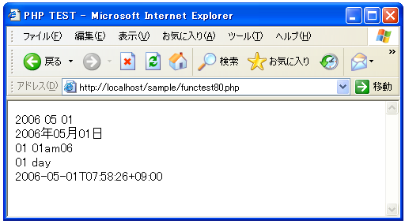

日時を取得する(time, date)
日時を指定したフォーマットで取得する方法について見ていきます。
date string date(string format [, int timestamp])
引数で指定したフォーマットで日付文字列を取得します。2番目の引数にて 取得したい日時を指定しますが、省略された場合は現在の日時に関して取得 します。 引数： format 日付のフォーマット timestamp フォーマットの対象となる日時 返り値： フォーマットされた日付文字列
フォーマットの対象となるタイムスタンプで指定可能な範囲は、通常 Fri, 13 Dec 1901 20:45:54 GMT から Tue, 19 Jan 2038 03:14:07 GMT までとなっています。省略した場合は「time」関数で得られる現在日時の値が対象となります。
指定可能なフォーマットの種類は下記の通りです。
| format 文字 | 説明 | 例 |
|---|---|---|
| d | 日。2桁の数字(ゼロ詰め) | 01 から 31 |
| D | 曜日。3文字のテキスト形式 | Mon から Sun |
| j | 日。(1桁はゼロ無し) | 1 から 31 |
| l | 曜日。フルスペル形式 | Sunday から Saturday |
| N | ISO-8601 形式の、曜日の数値表現 | 1（月曜日）から 7（日曜日） |
| S | 英語形式の序数を表すサフィックス。2 文字 | st, nd, rd または th。jと一緒に使用する |
| w | 曜日。数値 | 0 (日曜)から 6 (土曜) |
| z | 年間の通算日。数字。(ゼロから開始) | 0 から 365 |
| format 文字 | 説明 | 例 |
| W | ISO-8601 月曜日に始まる年単位の週番号 | 例: 42 (１年の第42週目) |
| format 文字 | 説明 | 例 |
| F | 月。フルスペルの文字 | January から December |
| m | 月。数字(ゼロ詰め) | 01 から 12 |
| M | 月。3文字形式 | Jan から Dec |
| n | 月。数字(1桁はゼロ無し) | 1 から 12 |
| t | 指定した月の日数 | 28 から 31 |
| format 文字 | 説明 | 例 |
| L | 閏年であるかどうかを表す論理値 | 1なら閏年。0なら閏年ではない |
| o | ISO-8601 形式の年。これは Y ほぼ同じだが、ISO 週番号（W）が前年あるいは翌年に属する場合がある点で異なる | 例: 1999 あるいは 2003 |
| Y | 年。4 桁の数字 | 例: 1999または2003 |
| y | 年。2 桁の数字 | 例: 99 または 03 |
| format 文字 | 説明 | 例 |
| a | 午前または午後（小文字） | am または pm |
| A | 午前または午後（大文字） | AM または PM |
| B | Swatch インターネット時間 | 000 から 999 |
| g | 時。12時間単位(1桁はゼロ無し) | 1 から 12 |
| G | 時。24時間単位(1桁はゼロ無し) | 0 から 23 |
| h | 時。数字。12 時間単位(ゼロ詰め) | 01 から 12 |
| H | 時。数字。24 時間単位(ゼロ詰め) | 00 から 23 |
| i | 分(ゼロ詰め) | 00 to 59 |
| s | 秒(ゼロ詰め) | 00 から 59 |
| format 文字 | 説明 | 例 |
| e | タイムゾーン識別子 | 例: UTC, GMT, Atlantic/Azores |
| I | サマータイム中か否か | 1ならサマータイム中。0ならそうではない |
| O | グリニッジ標準時(GMT)との時間差 | Example: +0200 |
| T | このマシーンのタイムゾーンの設定 | 例: EST, MDT ... |
| Z | タイムゾーンのオフセット秒数。 UTCの西側のタイムゾーン用のオフセットは常に負です。そして、 UTCの東側のオフセットは常に正です | -43200 から 43200 |
| format 文字 | 説明 | 例 |
| c | ISO 8601 日付 | 2004-02-12T15:19:21+00:00 |
| r | RFC 822 フォーマットされた日付 | 例: Thu, 21 Dec 2000 16:01:07 +0200 |
| U | Unix 時(1970年1月1日0時0分0秒)からの秒数 | -- |
例えば「2006年05月01日」などのような日付文字列を取得したい場合には「date('Y年m月d日');」のように行います。このようにフォーマット文字列で使われていない文字を記述した場合は、単に文字列として表示されます。フォーマット文字列と同じ文字を文字として表示したい場合には「¥」でエスケープして下さい。
date('Y年m月d日'); --> 2006年05月01日
date('d day'); --> 01 01am06
date('d ¥d¥a¥y'); --> 01 day
※「d」も「a」も「y」もそれぞれフォーマット識別子としての意味を持つため、「day」という文字列を表示させるにはそれぞれの文字に対して「¥」でエスケープを行う必要があります。
※文字をエスケープした結果、ダブルクォーテーションで囲まれた文字列の中で特別な意味を持つ文字になることがあります(例：¥n など)。これを避ける場合には「¥¥n」などのように「¥」自身もエスケープする必要があります。
次に二番目の引数であるタイムスタンプについても見ておきます。省略した場合はデフォルトで「time」関数で得られる現在時刻がフォーマットの対象となりますので「time」関数についても見ておきましょう。
time int time( void )
現在時刻をUnixエポック(1970年1月1日 00:00:00 GMT)からの通算秒 として 返します。 引数： 返り値： 通算の秒を表す数値
1970年1月1日 00:00:00 を0として、1秒経過するごとに1ずつ増加させて値となります。例えばこの値で取得した値に＋60した値は、現在より1分後の時間となります。
サンプルプログラム
では実際に試して見ます。
<html>
<head><title>PHP TEST</title></head>
<body>
<?php
print(date('Y m d').'<br>');
print(date('Y年m月d日').'<br>');
print(date('d day').'<br>');
print(date('d ¥d¥a¥y').'<br>');
print(date('c').'<br>');
?>
</body>
</html>
上記ファイルをWWWサーバに設置しブラウザ経由で見ると下記のように表示されます。

( Written by Tatsuo Ikura )

著者 / TATSUO IKURA
初心者～中級者の方を対象としたプログラミング方法や開発環境の構築の解説を行うサイトの運営を行っています。